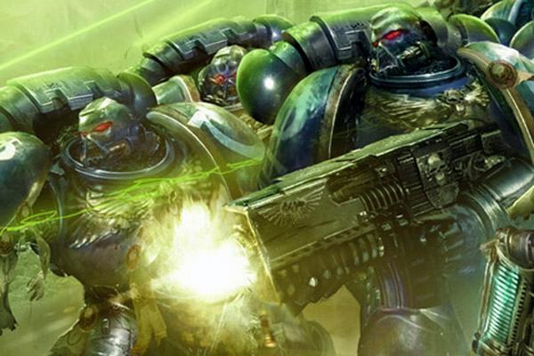

Receita para Space Marine
Receita simples e prática para a construção do mais poderoso guerreiro da humanidade

Ingredientes
- Um guerreiro
- Material genético do Imperador deus da humanidade
- Engenharia genética
- Extensas intervenções cirúrgicas
- Condicionamento psicológico
- Condicionamento psiquico
Preparo
- Junte o material genético do Imperador deus ao guerreiro selecionado;
- Realize as cirurgias necessárias para maximizar os orgãos do corpo do guerreiro;
- Caso necessário, implante novos orgãos duplicados (dois corações sempre são melhores que um);
- Realize os processos de condicionamento psicológico para maximizar a mente do futuro Space Marines;
- Para aqueles que se mostrarem aptos: alavancar as capacidadexs psiquicas adormecidas